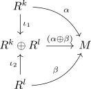
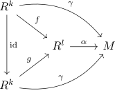
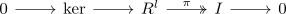
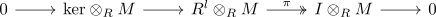

Lazard's theorem
Proposition
Let \(A\) be a ring and $M$ be \(A\)-Modul
TFAE:
- $M$ is a filtered colimit of finitely generated free modules
- $M$ is a filtered colimit of free modules
- $M$ is a filtered colimit of projective module
- $M$ is a filtered colimit of flat modules
- $M$ is flat module
Proof
1) $\implies$ 2)
special case
2) $\implies$ 3)
corollary of free module as projective module
3) $\implies$ 4)
corollary of projective module as flat module
4) $\implies$ 5)
corollary of filtered colimit of flat modules as flat module
5) $\implies$ 1)
Let $E(M)$ be the coslice category of finitely generated free modules. Then by module as colimit of the coslice category of finitely generated modules it remains to show that this subcategory is filtered
existence of a morphism
follows from

cofork
Suppose there exists parallel morphism, i.e.

where
then there exists some
with
\begin{displaymath}
\begin{tikzcd}
R^k \arrow[]{d}{} \arrow[bend left]{rdd}{}&
R^l \arrow[]{dd}{h} \arrow[]{rd}{\alpha}& \\
& M \\
R^n \arrow[]{ru}{\beta} & \\
\end{tikzcd}
\end{displaymath}such that
reduction
By replacing $f$ with $f - g$ we may assume w.l.o.g. that $g = 0$, as
By induction on $k$ we may reduce the case to $k = 1$, as by definition of the category we can find
\begin{displaymath}
\begin{tikzcd}
R \arrow[]{r}{} \arrow[]{rd}{}& & \\
& R^k \arrow[]{r}{\alpha}& M
\end{tikzcd}
\end{displaymath}and a morphism out of $R^k$ corresponds by the universal property of a coproduct to \(k\)-many morphism out of $R$
construction
Then $f: R \rightarrow R^l$ corresponds to an element in $R^l$, i.e. a tuple $(r_1,...,r_l)$ and $\alpha$ to an element $(m_1,...,m_l)$ (cf. hom out of a ring)
Furthermore the assumption that
shows that
Let $I \coloneqq (r_1,...,r_l) \subseteq R$ be the right ideal generated by those elements.
Since $M$ is flat, it preserves injectivity of the submodule inclusion
showing that
is injective
in particular this shows
Consider the exact sequence

where
Then by flatness the sequence

is exact
This shows that
since $e_i \otimes_R m_i \mapsto r_i \otimes_R m_i$